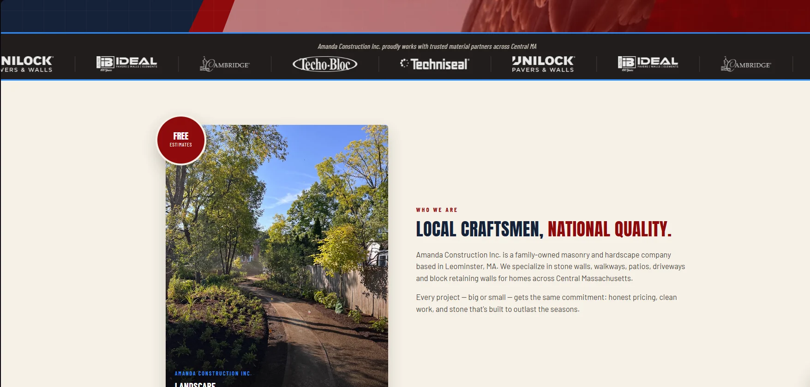
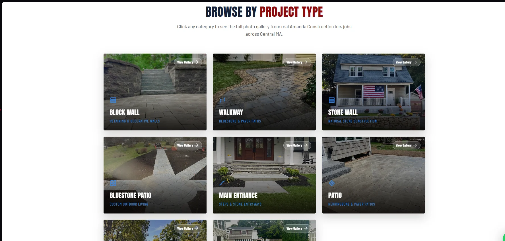

Objetivo comercial
Transformar visitantes em pedidos de orçamento.
Botões de contato, telefone, WhatsApp e chamadas para orçamento foram distribuídos nos pontos mais importantes da navegação.
Site em inglês desenvolvido para apresentar uma empresa de construção e masonry de Massachusetts com a mesma força visual presente em seus projetos.

Na construção civil, a decisão do cliente depende muito de credibilidade. O site apresenta serviços, trabalhos realizados, avaliações e formas de contato em uma experiência marcante e objetiva.
A identidade combina azul-marinho, vermelho, tipografia forte e referências visuais dos Estados Unidos, sem deixar que o design esconda o mais importante: a qualidade dos trabalhos reais.
Botões de contato, telefone, WhatsApp e chamadas para orçamento foram distribuídos nos pontos mais importantes da navegação.
Galerias por categoria e fotografias reais permitem que o visitante veja a experiência da empresa em muros, caminhos, pátios e entradas.
As capturas abaixo utilizam imagens e conteúdo do site com autorização do cliente.
Apresentação forte da marca, mensagem principal, avaliação de cliente e acesso rápido para orçamento.

História, posicionamento, parceiros de materiais e uma galeria visual que reforça o trabalho artesanal.

O visitante escolhe a categoria e acessa galerias reais de muros, caminhos, pátios, entradas e outros serviços.